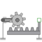

IdealGearR2TGearbox transforming rotational into translational motion |

|
Diagram
{kind=link}
Information
This information is part of the Modelica Standard Library maintained by the Modelica Association.
Couples rotational and translational motion, like a toothed wheel with a toothed rack, specifying the ratio of rotational / translational motion.
Parameters (3)
| useSupportR |
Value: false Type: Boolean Description: = true, if rotational support flange enabled, otherwise implicitly grounded |
|---|---|
| useSupportT |
Value: false Type: Boolean Description: = true, if translational support flange enabled, otherwise implicitly grounded |
| ratio |
Value: Type: Real (rad/m) Description: Transmission ratio (flange_a.phi/flange_b.s) |
Connectors (4)
Components (4)
| internalSupportR |
Type: InternalSupport |
|
|---|---|---|
| internalSupportT |
Type: InternalSupport |
|
| fixedR |
Type: Fixed |
|
| fixedT |
Type: Fixed |
Used in Examples (4)
|
Modelica.Blocks.Examples.NoiseExamples Demonstrates how to model measurement noise in an actuator |
|
|
Modelica.Electrical.Machines.Examples.AsynchronousInductionMachines Test example: AsynchronousInductionMachineSquirrelCage with inverter driving a conveyor |
|
|
Modelica.Magnetic.FundamentalWave.Examples.BasicMachines Asynchronous induction machine with squirrel cage and inverter driving a conveyor |
|
|
Modelica.Magnetic.QuasiStatic.FundamentalWave.Examples.BasicMachines.InductionMachines Induction machine with squirrel cage and inverter driving a conveyor |